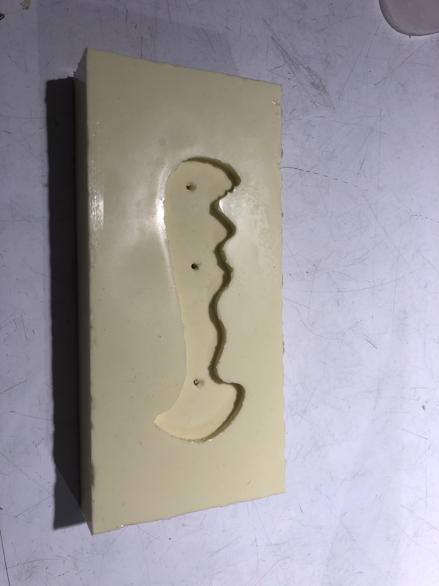
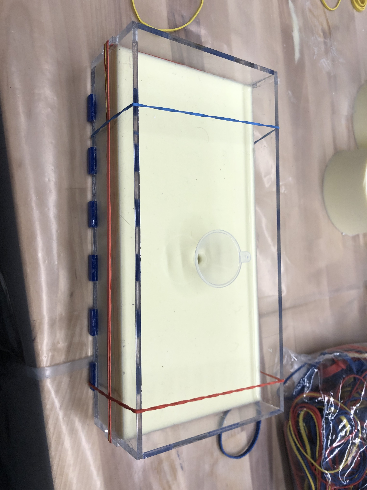
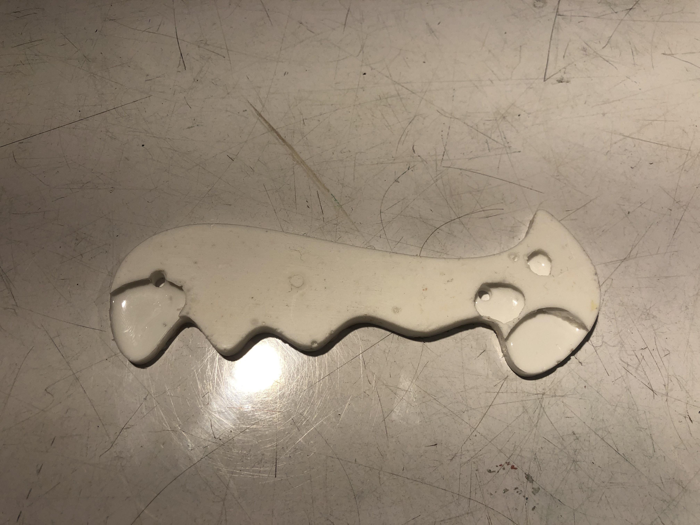
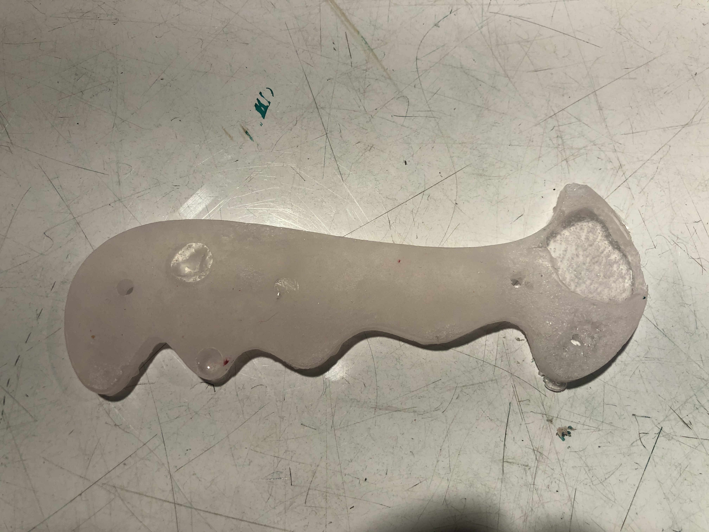
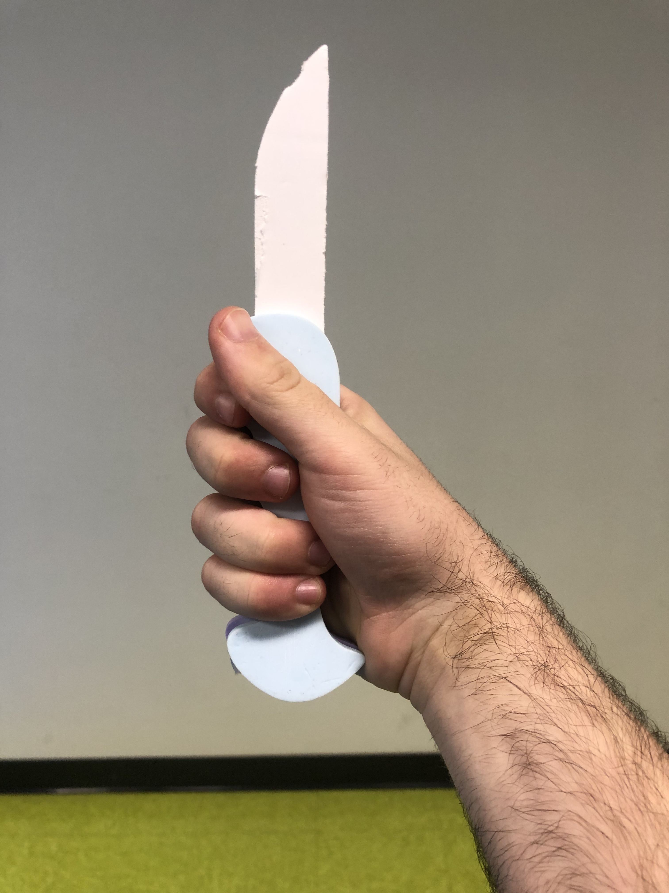
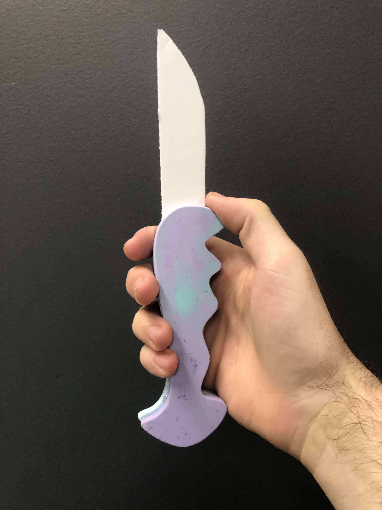

Getting a grip
This project was another exploration in problem identication, sketching, prototyping, howver this time in clay. I made a number of prototypes of different knife handles, scaling by hand and creating laser cut molds.
Sketches
I have always felt like pocket knife handles are too slippery. Pocket knife brands and variants usually have little to no texturing to help in grip, and form factor is more or less the same. I decided to make an ergonomic, right handed knife grip that provides additional grip support in holding and in the act of cutting.


Version 1: Simple Riveted Knife Handle
I went with a simple, finger grip oriented design for a proof of concept. While I felt it did help my grip, I felt like it was uninspired and found the ring/pinky finger slot awkward to hold.


Version 2: Fish Hook
Iterating on my previous design, I kept the finger slotting for my pointer and middle fingers, however smoothed out the pinky/ring finger slot. I also added a hooked end to the grip, allowing for significant dragging force on the edge of the hand.


Version 2: Mermaid Tail
I went ever further in terms of drag resistance, this time adding curvature to the top of the knife handle, giving stoppage around the palm. I found this to be the most comfortable design, and felt like it would give the greatest assist to users.


Afterthoughts
I liked working with clay, however found that the terracotta colored clay we were working with frustrating to deal with, as it cooled fast and become painful to deal with. I want to do more research into the relationship between casting silicon and getting detail textures, as I feel that textures would further enhance grip, but know that they do not always come out well during casting.
Casting
The second part of this project involved casting a silicone mold around the clay peice in an attempt to get the best possible partI made a number of iterations, experimenting with material and different casting settings.
Molding
I cast the clay part using an acryllic box and a silicone pour. The resulting mold and box were used to make my various knife handle iterations.
 Version 1 & 2
The first version came out decently, barring it suffering from serious bubbling issues, cause by the weep holes not allowing enough air to escape. I dug out the holes more for V2, however, I beleive that I let the second type of material sit for too long, resulting in a very pourous structure.
 Version 3 & 4
The third and fourth versions came out much better. I reverted to the initial resin, and this time pressure cast the two iterations, resulting in a much smoother and high fidelity product. I used three different dyes, and on the fourth iteration, intermittently added them to make a swirl. I then glued them together with a peice of foamcore to make the demo peice.
 